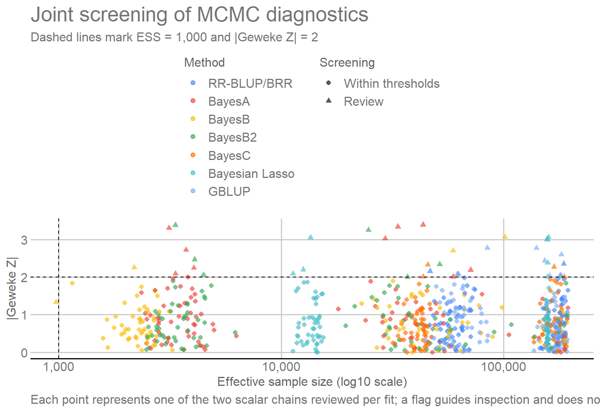

This module fits seven genomic-prediction methods to ten papaya
traits using the same five family-stratified cross-validation folds
constructed in Module 02.
The workflow proceeds directly from the matrices to model fitting,
out-of-fold prediction, decomposition of genomic values, fold-level
predictive metrics, and MCMC diagnostics.
The evaluated methods are RR-BLUP/BRR, BayesA, BayesB, BayesB2,
BayesC, Bayesian Lasso (BL), and GBLUP. All models are fitted with BGLR
(Pérez and Campos
2014).
2. Packages and input object
The packages used here have distinct roles:
BGLR: fits Bayesian regression, RR-BLUP/BRR, and GBLUP
models;
coda: computes MCMC diagnostics, including ESS and
Geweke statistics;
dplyr: organizes, selects, and summarizes result
tables;
ggplot2: builds the graphical MCMC diagnostic;
ggthemes: applies the GDocs theme and color scale;
knitr: formats the tables presented in the
document;
here: builds project-relative file paths.
library(BGLR) # Fit genomic prediction models.
library(coda) # Diagnose MCMC chains.
library(dplyr) # Manipulate and summarize tables.
library(ggplot2) # Build diagnostic figures.
library(ggthemes) # Apply the GDocs theme and color scale.
library(knitr) # Format tables.
library(here) # Build project-relative paths.
2.1 Input object and persisted outputs
The matrices constructed in Module 02 are read directly from
output/matrices/. During normal rendering, the module only
reads outputs already persisted in output/models/; no chain
directory is created and no fit is started. The
output/models/bglr/ directory is prepared only inside the
full-regeneration block in Section 9.
# Define the persisted-output directory and directly load the matrix object from Module 02.
OUTPUT_DIR <- here("output", "models")
matrices_object <- readRDS(
here("output", "matrices", "matrices_object.rds")
)
ids <- matrices_object$ids
metadata <- matrices_object$metadata
# Organize the phenotypes used in the analysis.
phenotypes <- matrices_object$phenotypes
trait_dictionary <- matrices_object$trait_dictionary
X <- matrices_object$X
M <- matrices_object$M
G <- matrices_object$G
cv_folds <- matrices_object$cv_folds
traits <- colnames(phenotypes)
2.2 Input compatibility
The following table confirms that the objects received from Module 02
have compatible dimensions before any fit. No object is filtered or
reconstructed in this check.
All five inputs retain the same 150 individuals. The phenotype matrix
contains 10 traits, X contains 10 family-design and
intercept columns, M contains 72 centered dosage columns,
and G is square with 150 columns. This compatibility allows
the same individual order to be used throughout model fitting.
3. Statistical model
The ten traits are continuous and are fitted with
response_type = "gaussian". The specification below
therefore describes the conditional mean used by BGLR together with a
residual term for the Gaussian response. The same intercept and family
structure is retained across methods; what changes is the probabilistic
representation of the genomic component.
For each trait, the common model is
\[
\mathbf y =
\mathbf 1\mu +
\mathbf X_F\boldsymbol\beta_F +
\mathbf g +
\boldsymbol\varepsilon,
\]
where \(\mu\) is the intercept,
\(\mathbf X_F\boldsymbol\beta_F\)
represents the family fixed effect, \(\mathbf
g\) is the genomic component, and \(\boldsymbol\varepsilon\) is the residual
vector.
3.1 Intercept and family fixed effect
BGLR fits an intercept automatically. Therefore, the intercept column
created in Module 02 is removed from X before the family
term is specified. The remaining columns are the FAM
contrasts produced by model.matrix() in Module 02; no new
family coding is created here.
X_fixed <- X[
,
colnames(X) != "(Intercept)",
drop = FALSE
]
data.frame(Family_column = colnames(X_fixed)) |>
format_table(
caption = "Family columns used as fixed effects",
col.names = c("Family column")
)
Family columns used as fixed effects
Family column
FAM2
FAM3
FAM4
FAM5
FAM6
FAM7
FAM8
FAM9
FAM10
After the intercept is removed, X_fixed contains 9
family-contrast columns. These columns enter as one fixed term shared by
all seven methods.
In BGLR, model = "FIXED" means that the coefficients
associated with the family columns are estimated as fixed effects
without the shrinkage applied to the genomic effects.
These methods mainly differ in the prior distribution assigned to
marker effects \(\boldsymbol\alpha\).
GBLUP instead models genomic values directly as
\[
\mathbf g \sim
N\left(\mathbf 0,\mathbf G\sigma_g^2\right).
\]
4. Cross-validation
4.1 Fixed partition and paired comparison
The five folds defined in Module 02 are used without reconstruction.
Each fold contains 30 validation individuals and 120 training
individuals while preserving family representation. The table below only
retrieves this fixed partition; using exactly the same folds for every
method makes comparisons paired with respect to validation
individuals.
format_table(
matrices_object$fold_summary,
caption = "Distribution of individuals across the five folds",
col.names = c("Fold", "Training size", "Validation size")
)
Distribution of individuals across the five folds
Fold
Training size
Validation size
1
120
30
2
120
30
3
120
30
4
120
30
5
120
30
4.2 Phenotype masking and scope of validation
During each fit, phenotypes of the individuals in the validation fold
are set to NA. BGLR fits the model using the remaining
phenotypes and returns predictions for the masked individuals.
Validation candidates remain present in the fixed genotype-derived
matrices described in Module 02. Consequently, the reported
cross-validation performance targets prediction within the represented
breeding population rather than leave-family-out generalization.
5. MCMC settings
5.1 Common chain settings
The central chain settings are:
N_ITER = 1,000,000: total iterations in each
chain;
BURN_IN = 200,000: initial iterations discarded before
diagnostics;
THIN = 4: retains one draw every four iterations;
R2_PRIOR = 0.5: global hyperparameter used by BGLR to
calibrate prior scales;
SEED_BASE = 202608050: start of the deterministic seed
sequence. Each run adds its sequential number to this base, giving all
350 combinations different and reproducible seeds.
In this context, R2 is a prior-calibration
hyperparameter in BGLR. It is not the observed coefficient of
determination, an estimate of heritability, or a measure of predictive
performance. When particular prior scales are not supplied explicitly,
BGLR uses R2 to calibrate them relative to the phenotypic
variance.
For terms in ETA that do not receive a term-specific
R2, BGLR uses R2 / nLT, where nLT
is the number of terms in ETA. This module contains two
terms: the fixed family effect and the genomic component. Therefore, the
automatic calibration for the genomic component uses
0.5 / 2 = 0.25.
This value of 0.25 does not mean that 25% of the phenotypic variance
was estimated as genomic, nor does it represent an estimated partition
of variance between family and genome. It is only a quantity used by
BGLR to define prior scales. The application of this rule to the
Bayesian Lasso is shown explicitly in Section 6.6.
The iteration, burn-in, and thinning configuration follows the
reference analysis (Silva et al. 2021). The numbers
of written, discarded, and retained draws are derived from these
settings rather than additional model parameters.
5.2 Method-specific settings and review thresholds
Other method-specific definitions are:
BAYESB2_ZERO_PROBABILITY = 1e-5, equivalent to
probIn = 0.99999;
BAYESB2_COUNTS = 1e6, strongly concentrating the
probIn prior;
ESS_REVIEW_THRESHOLD = 1000 and
GEWEKE_REVIEW_THRESHOLD = 2, used only as review flags
rather than automatic exclusion rules;
BL_LAMBDA_TYPE = "FIXED", indicating that the lambda
calculated in Section 6.6 remains constant during the chain.
To distinguish explicit decisions in this analysis from settings left
under the package parameterization, the following table summarizes the
origin of the main parameters. Project denotes values
set directly in this workflow. BGLR denotes settings
that were not overridden and therefore follow the package defaults or
internal calibration rules.
Origin of the main settings in Module 03
Item
Origin
Treatment
nIter, burnIn, and thin
Project
Set explicitly and kept common across all 350 fits.
Global R2
Project
R2 = 0.5 is passed explicitly to every fit to calibrate prior scales.
Fit seeds
Project
A deterministic sequence provides a different reproducible seed for each
fit.
BayesB2: probIn and counts
Project
probIn and counts are set explicitly in the BayesB2 parameterization.
Bayesian Lasso: type and lambda
Project
Lambda is calculated using the rule presented in Section 6.6 and kept
fixed throughout the chain.
ESS and Geweke review thresholds
Project
Defined by the project only as review flags, with no automatic exclusion
of fits.
Residual-prior hyperparameters not supplied explicitly
BGLR
Because they are not supplied explicitly in the main call, they remain
under BGLR defaults and calibration rules.
Other prior hyperparameters not supplied explicitly
BGLR
When they are not specified in ETA_models or the BGLR() call, they
remain under BGLR defaults and calibration rules.
# Set the total MCMC chain length for each fit.
N_ITER <- 1000000L
# Discard the first 200,000 iterations as burn-in.
BURN_IN <- 200000L
# Save one sample every four iterations.
THIN <- 4L
# Use R2 = 0.5 as BGLR's global hyperparameter for calibrating prior scales.
R2_PRIOR <- 0.5
# Start the deterministic seed sequence; each run receives a unique increment.
SEED_BASE <- 202608050L
# Derive the number of saved samples before and after burn-in removal.
RAW_SAVED_SAMPLES <- floor(N_ITER / THIN)
BURN_IN_SAVED_SAMPLES <- floor(BURN_IN / THIN)
RETAINED_SAMPLES <- RAW_SAVED_SAMPLES - BURN_IN_SAVED_SAMPLES
# Parameterize BayesB2 with a zero-effect probability of 1e-5.
BAYESB2_ZERO_PROBABILITY <- 1e-5
BAYESB2_PROB_IN <- 1 - BAYESB2_ZERO_PROBABILITY
# Strongly concentrate the probIn prior around 0.99999.
BAYESB2_COUNTS <- 1e6
# Flag chains with ESS below 1,000 for review.
ESS_REVIEW_THRESHOLD <- 1000
# Flag chains with |Geweke Z| above 2 for review.
GEWEKE_REVIEW_THRESHOLD <- 2
# Keep the Bayesian Lasso lambda fixed during the chain.
BL_LAMBDA_TYPE <- "FIXED"
5.3 Written and retained samples
The table summarizes the choices controlling MCMC sampling. With
1,000,000 iterations and thin = 4, BGLR writes 250,000
scalar draws; the first 50,000 correspond to the 200,000-iteration
burn-in, leaving 200,000 saved draws for the downstream diagnostics.
These counts are derived from the three chain parameters.
In the scalar *.dat files used below, BGLR writes one
draw every THIN iterations across the full chain, including
burn-in. The diagnostic routine therefore explicitly removes the first
BURN_IN_SAVED_SAMPLES written draws. With the settings used
here, both N_ITER and BURN_IN are divisible by
THIN, so conversion between iterations and written draws is
exact and RETAINED_SAMPLES posterior draws remain.
# Collect the MCMC settings in a reference table.
data.frame(
Setting = c(
"Iterations",
"Burn-in",
"Thinning",
"Written scalar draws",
"Written draws corresponding to burn-in",
"Retained posterior samples",
"Global R2 (prior calibration)",
"BayesB2 zero-effect probability"
),
Value = c(
N_ITER,
BURN_IN,
THIN,
RAW_SAVED_SAMPLES,
BURN_IN_SAVED_SAMPLES,
RETAINED_SAMPLES,
R2_PRIOR,
BAYESB2_ZERO_PROBABILITY
)
) |>
format_table(caption = "MCMC settings used for the seven methods")
MCMC settings used for the seven methods
Setting
Value
Iterations
1.0e+06
Burn-in
2.0e+05
Thinning
4.0e+00
Written scalar draws
2.5e+05
Written draws corresponding to burn-in
5.0e+04
Retained posterior samples
2.0e+05
Global R2 (prior calibration)
5.0e-01
BayesB2 zero-effect probability
1.0e-05
This configuration yields 250,000 scalar draws written per chain and
200,000 draws after the burn-in portion is removed. The same iteration,
burn-in, thinning, and R2 settings are used in all 350
fits.
6. Genomic prediction methods
The following table relates each method to its BGLR component and the
genomic input supplied to the fit. Six methods operate directly on
M; GBLUP uses G. The subsections that follow
explain how the prior or genomic representation changes across
methods.
# Define the compared methods, display labels, and genomic structure used by each fit.
model_catalogue <- data.frame(
Method = c(
"RRBLUP", "BayesA", "BayesB", "BayesB2",
"BayesC", "BL", "GBLUP"
),
Label = c(
"RR-BLUP", "BayesA", "BayesB", "BayesB2",
"BayesC", "Bayesian Lasso", "GBLUP"
),
BGLR_component = c(
"BRR", "BayesA", "BayesB", "BayesB",
"BayesC", "BL", "RKHS"
),
Genomic_input = c(
"M", "M", "M", "M", "M", "M", "G"
),
Main_assumption = c(
"Common Gaussian variance for all marker effects",
"Marker-specific scaled-t variances",
"Scaled-t slab and a point mass at zero",
"BayesB with zero-effect probability near 1e-5",
"Common Gaussian slab and a point mass at zero",
"Double-exponential marginal prior; lambda fixed at BGLR-calibrated lambda0",
"Genomic values structured by G"
),
stringsAsFactors = FALSE
)
# Use the persisted catalogue as the canonical source of method names.
method_names <- model_catalogue$Method
# Keep tutorial-facing labels separate from the persisted catalogue.
method_labels <- c(
RRBLUP = "RR-BLUP/BRR",
BayesA = "BayesA",
BayesB = "BayesB",
BayesB2 = "BayesB2",
BayesC = "BayesC",
BL = "Bayesian Lasso",
GBLUP = "GBLUP"
)
data.frame(
Method = unname(method_labels[method_names]),
BGLR_component = model_catalogue$BGLR_component,
Genomic_input = model_catalogue$Genomic_input,
Structure = model_catalogue$Main_assumption
) |>
format_table(caption = "Genomic prediction methods evaluated",
col.names = c("Method", "BGLR component", "Genomic input", "Structure"))
Genomic prediction methods evaluated
Method
BGLR component
Genomic input
Structure
RR-BLUP/BRR
BRR
M
Common Gaussian variance for all marker effects
BayesA
BayesA
M
Marker-specific scaled-t variances
BayesB
BayesB
M
Scaled-t slab and a point mass at zero
BayesB2
BayesB
M
BayesB with zero-effect probability near 1e-5
BayesC
BayesC
M
Common Gaussian slab and a point mass at zero
Bayesian Lasso
BL
M
Double-exponential marginal prior; lambda fixed at BGLR-calibrated
lambda0
GBLUP
RKHS
G
Genomic values structured by G
The main distinction among the six regression methods is the prior
assigned to marker effects. GBLUP changes the representation: instead of
estimating effects for individual columns of M, it models
the genomic-value vector directly with covariance defined by
G.
6.1 RR-BLUP/BRR
RR-BLUP is represented by the BGLR BRR component, the
Bayesian ridge regression analogue of homogeneous ridge-regression BLUP.
All marker effects share a common Gaussian variance and receive the same
ridge-type shrinkage (Endelman 2011; Pérez and Campos 2014).
BayesB uses a mixture between a point mass at zero and a continuous
distribution for nonzero effects. It therefore combines shrinkage and
variable selection.
6.4 BayesB2
BayesB2 is the name used in this project for a specific
parameterization of the BGLR BayesB component. The intended
probability of a zero marker effect is
\[
P(\alpha_j=0)=10^{-5}.
\]
Because probIn represents the probability that a marker
is included with a nonzero effect,
\[
probIn=1-10^{-5}=0.99999.
\]
The value counts = 10^6 makes the beta prior for
probIn highly concentrated around this value.
6.5 BayesC
BayesC also allows a marker effect to be zero, but nonzero effects
share a common variance.
6.6 Bayesian Lasso and definition of the fixed lambda
The Bayesian Lasso uses a double-exponential marginal prior for
marker effects (Park and Casella 2008). The
shrinkage parameter \(\lambda\)
controls the amount of shrinkage.
Here, type = "FIXED" has a different meaning from
model = "FIXED" used for family. Within the BL term,
type = "FIXED" means that \(\lambda\) remains constant throughout the
MCMC chain.
The adopted value reproduces the calibration rule that BGLR would
apply to the BL term when no term-specific R2 is supplied.
The package uses R2 / nLT, where nLT is the
number of terms in ETA. Because ETA contains
two terms in this module — family and the genomic component — the
calibration scale used for BL is
This value of 0.25 is a prior-calibration quantity for the BL term.
It is not an estimate of the proportion of phenotypic variance explained
by the genomic component and does not correspond to the observed
predictive \(R^2\).
# Apply BGLR's R2 / nLT calibration to the BL term, with nLT equal to the number of terms in ETA.
BL_N_LINEAR_TERMS <- 2L
BL_COMPONENT_R2 <- R2_PRIOR / BL_N_LINEAR_TERMS
BL_MSX <-
sum(M^2) / nrow(M) -
sum(colMeans(M)^2)
BL_LAMBDA_SQUARED <-
2 * (1 - R2_PRIOR) / BL_COMPONENT_R2 * BL_MSX
BL_LAMBDA <- sqrt(BL_LAMBDA_SQUARED)
The table makes explicit the calibration leading to the fixed lambda.
MSx summarizes the quadratic scale of M,
Global calibration R2 is the value passed to BGLR, and
BL calibration R2 is the R2 / nLT value used
for this term. The resulting Lambda0 is then reused without
trait- or fold-specific tuning.
Definition of the Bayesian-Lasso shrinkage parameter
Quantity
Value
MSx
25.60502
Global calibration R2
0.50000
BL calibration R2
0.25000
Fixed lambda0
10.12028
For these data, \(MS_x\approx25.6050\) and \(\lambda_0\approx10.1203\). The same value
is used for every trait and fold. In this analysis, \(\lambda\) is fixed at this BGLR calibration
so that the shrinkage parameter remains common across traits and folds.
This is a modeling choice distinct from a stochastic-lambda
specification; no trait-specific predictive metric is used to determine
\(\lambda\).
6.7 GBLUP
GBLUP uses the genomic relationship matrix G. In BGLR,
this structure is implemented through an RKHS component
with K = G. Although the component is named
RKHS, the supplied kernel here is exactly the genomic
relationship matrix, so the term represents genomic values with
covariance proportional to G, consistent with the model in
Section 3.2.
7. BGLR model specifications
All seven specifications retain the same intercept and family fixed
term. For the six regression methods, the genomic component is defined
from M with the corresponding prior; BayesB2 adds its
inclusion parameterization and the Bayesian Lasso uses the fixed lambda
calibrated above. GBLUP defines the genomic component directly from
G. Thus, only the genomic specification varies across
methods.
The code block below can be read in two layers. First,
family_term defines once the family fixed effect shared by
every method. Each element of ETA_models then combines that
same fixed term with a method-specific genomic component.
RR-BLUP/BRR, BayesA, BayesB, BayesB2, BayesC, and BL use
X = M; what changes among them is the prior and, when
applicable, its hyperparameters. GBLUP is the representation exception:
it uses K = G through the RKHS component.
Thus, the block does not define seven entirely different models; it
holds the non-genomic part constant and changes only the probabilistic
representation of the genomic component.
# Define the fixed family effect and the method-specific genomic component.
family_term <- list(
X = X_fixed,
model = "FIXED"
)
ETA_models <- list(
RRBLUP = list(
fixed = family_term,
genomic = list(X = M, model = "BRR")
),
BayesA = list(
fixed = family_term,
genomic = list(X = M, model = "BayesA")
),
BayesB = list(
fixed = family_term,
# Define the genomic component of this model specification.
genomic = list(X = M, model = "BayesB")
),
BayesB2 = list(
fixed = family_term,
genomic = list(
X = M,
model = "BayesB",
probIn = BAYESB2_PROB_IN,
counts = BAYESB2_COUNTS
)
),
BayesC = list(
fixed = family_term,
# Define the genomic component of this model specification.
genomic = list(X = M, model = "BayesC")
),
BL = list(
fixed = family_term,
genomic = list(
X = M,
model = "BL",
type = BL_LAMBDA_TYPE,
lambda = BL_LAMBDA
)
),
GBLUP = list(
fixed = family_term,
genomic = list(K = G, model = "RKHS")
)
)
8. Trait, fold, and method combinations
The same seven specifications are applied to all ten traits and five
folds, forming 350 combinations — 50 fits per method. The grid is
organized deterministically, and every fit receives its own identifier
and seed. Seeds control chain reproducibility without changing the folds
defined in Module 02.
# Combine traits, folds, and methods and assign a reproducible seed to each fit.
run_design <- expand.grid(
Trait = traits,
Fold = seq_len(matrices_object$settings$n_folds),
Method = method_names,
stringsAsFactors = FALSE
)
# Organize the cross-validation and fitting structure.
run_design <- run_design[
order(
match(run_design$Trait, traits),
run_design$Fold,
match(run_design$Method, method_names)
),
]
rownames(run_design) <- NULL
run_design$Run_number <- seq_len(nrow(run_design))
run_design$Seed <- SEED_BASE + run_design$Run_number
run_design$Run_id <- paste(
run_design$Trait,
paste0("F", run_design$Fold),
run_design$Method,
sep = "_"
)
run_design |>
count(Method, name = "Number_of_fits") |>
mutate(Method_label = unname(method_labels[Method])) |>
select(Method_label, Number_of_fits) |>
format_table(
caption = "Number of fits by method",
col.names = c("Method", "Number of fits")
)
Number of fits by method
Method
Number of fits
Bayesian Lasso
50
BayesA
50
BayesB
50
BayesB2
50
BayesC
50
GBLUP
50
RR-BLUP/BRR
50
Each method appears in 50 combinations, for 350 fits overall. Because
the same trait × fold grid is used for every method, downstream
comparisons start from the same validation design.
9. Fitting the 350 models
9.1 Execution modes
A normal render of this module does not rerun the 350
fits. The fit-models,
assemble-fit-results, and save-results chunks
remain eval=FALSE; the page therefore reuses the previously
persisted outputs in output/models/ instead of
recalculating the MCMC chains.
A full regeneration is a deliberate operation. It must proceed from
top to bottom in the same R session: execute fit-models,
then assemble-fit-results, continue through Sections 10 and
11 — including combine-results and the diagnostic updates —
and finally execute save-results. That sequence replaces
the persisted outputs and should be used only when there is an explicit
intention to rerun all 350 fits. A normal workflow render does not
activate this path.
9.2 Scalar chains used for diagnostics
For MCMC diagnostics, each method is associated with the relevant
native BGLR scalar file and its representative parameter.
The selected chain is one representative scalar quantity for each
specification, not an exhaustive diagnostic of every marker effect.
BGLR’s native scalar files record draws every THIN
iterations from the start of the chain, so the burn-in portion remains
in those files and is explicitly removed before ESS and Geweke are
computed. For BL, lambda is fixed and has no updated chain, so the
second diagnostic uses mu.dat and is labelled as the
intercept; it must not be interpreted as a genomic-component chain.
9.3 Fitting routine and outputs from each combination
All 350 fits follow the same routine. For each trait–fold–method
combination, phenotypes of the 30 validation individuals are masked and
the other 120 provide the phenotypic information for fitting. The
genotype-derived matrices remain fixed, preserving the validation design
described in Module 02.
Each fit stores OOF predictions, fixed and genomic components,
predictive metrics, DIC and pD, method-specific parameters when
available, BGLR warnings, and elapsed time. For MCMC diagnostics, the
residual-variance chain and one method-representative scalar chain are
evaluated after explicit removal of draws written during burn-in; ESS
and Geweke are then computed from the post-burn-in segment.
To follow the long block without relying on programming details, each
loop iteration can be read as five steps:
identify the trait–fold–method combination and its seed;
mask phenotypes for the 30 validation individuals;
fit BGLR using the corresponding genomic specification;
recover the total prediction and separate it into intercept, family
fixed effect, and genomic component;
record OOF predictions, metrics, fit quantities, and diagnostics
from the post-burn-in chains.
The code repeats this same workflow for all 350 combinations; no
methodological decision is made inside the loop based on the results of
a particular trait or fold.
# Prepare the directory tree only when a full regeneration is deliberately executed.
BGLR_DIR <- file.path(OUTPUT_DIR, "bglr")
dir.create(BGLR_DIR, recursive = TRUE, showWarnings = FALSE)
# Lists that collect the outputs from each fit.
metric_parts <- vector("list", nrow(run_design))
prediction_parts <- vector("list", nrow(run_design))
genomic_value_parts <- vector("list", nrow(run_design))
convergence_parts <- vector("list", nrow(run_design))
for (run_index in seq_len(nrow(run_design))) {
# Identify the current trait-fold-method combination.
trait_name <- run_design$Trait[run_index]
fold_number <- run_design$Fold[run_index]
method_name <- run_design$Method[run_index]
run_id <- run_design$Run_id[run_index]
run_seed <- run_design$Seed[run_index]
cat(sprintf("[%03d/%03d] %s\n", run_index, nrow(run_design), run_id))
# Create the directory for the native BGLR chains.
bglr_run_dir <- file.path(
BGLR_DIR,
trait_name,
paste0("F", fold_number),
method_name
)
dir.create(bglr_run_dir, recursive = TRUE, showWarnings = FALSE)
save_prefix <- file.path(bglr_run_dir, "bglr_")
unlink(Sys.glob(paste0(save_prefix, "*")))
# Select the phenotype vector for the current trait.
y_observed <- phenotypes[, trait_name]
names(y_observed) <- ids
# Identify training and validation individuals.
validation_index <- which(cv_folds$Fold == fold_number)
training_index <- which(cv_folds$Fold != fold_number)
# Mask phenotypes from the validation fold.
y_model <- y_observed
y_model[validation_index] <- NA_real_
# Use the deterministic seed assigned to this fit.
set.seed(run_seed)
# Store BGLR warnings for later description.
run_warning_messages <- character(0)
fit_start <- proc.time()[["elapsed"]]
# Fit the configured BGLR model and capture warnings emitted during fitting.
fit <- withCallingHandlers(
BGLR::BGLR(
y = y_model,
ETA = ETA_models[[method_name]],
response_type = "gaussian",
nIter = N_ITER,
burnIn = BURN_IN,
thin = THIN,
R2 = R2_PRIOR,
saveAt = save_prefix,
verbose = FALSE,
rmExistingFiles = TRUE
),
warning = function(w) {
run_warning_messages <<- c(
run_warning_messages,
conditionMessage(w)
)
invokeRestart("muffleWarning")
}
)
fit_end <- proc.time()[["elapsed"]]
# Recover predictions for validation individuals.
observed_validation <- y_observed[validation_index]
predicted_validation <- fit$yHat[validation_index]
# Recover the fixed family component.
fixed_component <- as.vector(
X_fixed %*% fit$ETA$fixed$b
)
# Obtain the genomic component by subtraction.
genomic_component <- as.vector(
fit$yHat - fit$mu - fixed_component
)
# Store genomic values for all individuals.
genomic_value_parts[[run_index]] <- data.frame(
Run_id = run_id,
IND = ids,
Trait = trait_name,
Fold = fold_number,
Method = method_name,
Genomic_value = genomic_component
)
# Store only the out-of-fold predictions for the current fold.
prediction_parts[[run_index]] <- data.frame(
Run_id = run_id,
IND = ids[validation_index],
Trait = trait_name,
Fold = fold_number,
Method = method_name,
Observed = observed_validation,
Predicted = predicted_validation,
Fixed_component = fixed_component[validation_index],
Genomic_component = genomic_component[validation_index]
)
# Method-specific parameters are recorded when available.
posterior_prob_in <- c(fit$ETA$genomic$probIn, NA_real_)[1]
bl_lambda <- c(fit$ETA$genomic$lambda, NA_real_)[1]
# Calculate predictive and model-fit metrics for the fold.
metric_parts[[run_index]] <- data.frame(
Run_id = run_id,
Trait = trait_name,
Fold = fold_number,
Method = method_name,
Seed = run_seed,
Training_n = length(training_index),
Validation_n = length(validation_index),
Correlation = cor(observed_validation, predicted_validation),
RMSE = sqrt(mean((observed_validation - predicted_validation)^2)),
MAE = mean(abs(observed_validation - predicted_validation)),
Prediction_bias = mean(predicted_validation - observed_validation),
Regression_slope =
cov(observed_validation, predicted_validation) /
var(predicted_validation),
DIC = fit$fit$DIC,
Effective_parameters = fit$fit$pD,
Log_likelihood_at_posterior_mean = fit$fit$logLikAtPostMean,
Posterior_mean = fit$mu,
# Record the available standard deviation for the posterior intercept mean.
Posterior_mean_SD = c(fit$SD.mu, NA_real_)[1],
Residual_variance = fit$varE,
Residual_variance_SD = c(fit$SD.varE, NA_real_)[1],
BL_lambda = bl_lambda,
BGLR_warning_count = length(run_warning_messages),
Tau2_warning_count = sum(grepl(
"tau2 was not updated",
run_warning_messages,
fixed = TRUE
)),
Lambda_update_warning_count = sum(grepl(
"lambda was not updated",
run_warning_messages,
fixed = TRUE
)),
Posterior_probIn = posterior_prob_in,
Elapsed_seconds = fit_end - fit_start
)
# Read the residual-variance chain.
residual_trace_full <- scan(
paste0(save_prefix, "varE.dat"),
quiet = TRUE
)
# Read the method-representative scalar chain used for diagnostics; for BL this is the intercept.
diagnostic_trace_table <- read.table(
paste0(save_prefix, diagnostic_trace_suffix[method_name]),
header = diagnostic_trace_header[method_name],
check.names = FALSE
)
diagnostic_trace_full <- diagnostic_trace_table[
,
diagnostic_trace_column[method_name]
]
# Remove the saved samples corresponding to burn-in.
posterior_index <- seq.int(
BURN_IN_SAVED_SAMPLES + 1L,
length(residual_trace_full)
)
trace_matrix <- cbind(
Residual_variance = residual_trace_full[posterior_index],
Representative_parameter = diagnostic_trace_full[posterior_index]
)
# Convert chains to the coda representation.
trace_object <- coda::mcmc(
trace_matrix,
start = BURN_IN + THIN,
thin = THIN
)
# Calculate effective sample size and the Geweke statistic.
trace_ess <- coda::effectiveSize(trace_object)
trace_geweke <- coda::geweke.diag(trace_object)$z
parameter_names <- c(
"Residual_variance",
unname(diagnostic_trace_parameter[method_name])
)
convergence_parts[[run_index]] <- data.frame(
Run_id = run_id,
Trait = trait_name,
Fold = fold_number,
Method = method_name,
Parameter = parameter_names,
Retained_samples = nrow(trace_matrix),
Posterior_mean = colMeans(trace_matrix),
Posterior_SD = apply(trace_matrix, 2, sd),
Effective_sample_size = as.numeric(trace_ess),
Geweke_Z = as.numeric(trace_geweke)
)
# Release the fitted object before the next combination.
fit <- NULL
trace_object <- NULL
gc(verbose = FALSE)
}
9.4 Assembling and writing the primary outputs
At the end of the loop, the populated lists are combined into the
four tables used by the diagnostics and downstream modules. The block
below is the direct continuation of fit-models.
10. Predictions, genomic values, and fold-level metrics
10.1 Loading persisted outputs
The consolidated tables produced by the 350 fits are loaded from
output/models/, making predictions, genomic values,
metrics, and diagnostics available from persisted outputs without
recalculating the MCMC chains.
# Load the consolidated fitting tables used by the downstream diagnostics.
cv_metrics_by_fold <- read.csv(
file.path(OUTPUT_DIR, "cv_metrics_by_fold.csv"),
check.names = FALSE
)
cv_predictions <- read.csv(
file.path(OUTPUT_DIR, "cv_predictions.csv"),
check.names = FALSE
)
# Organize the estimated genomic component for each individual.
genomic_values_by_fold <- read.csv(
file.path(OUTPUT_DIR, "genomic_values_by_fold.csv"),
check.names = FALSE
)
convergence_diagnostics <- read.csv(
file.path(OUTPUT_DIR, "convergence_diagnostics.csv"),
check.names = FALSE
)
10.2 OOF predictions and genomic values
The total prediction and genomic value are related by
The prediction table contains only individuals from the fold that was
masked in each fit, so every row is an OOF prediction. In contrast,
genomic_values_by_fold stores the genomic component
calculated for all 150 individuals in every fit; downstream modules must
respect fold context when constructing cross-fitted values.
10.3 Predictive metrics and Bayesian fit criteria
Predictive metrics are computed only for the 30 masked individuals in
each fold. Correlation is the Pearson correlation between
observed and predicted values; RMSE and MAE summarize error magnitude in
trait units; Prediction_bias = mean(Predicted - Observed)
has ideal value 0; and
Regression_slope = cov(Observed, Predicted) / var(Predicted)
is the slope from regressing observed on predicted values, with
reference value 1.
DIC and Effective_parameters (pD) have a
different role: they are posterior fit-complexity criteria derived from
the observed training phenotypes, not OOF predictive metrics. Lower DIC
indicates a better fit-complexity tradeoff only among models fitted to
the same response and comparable data; DIC should not be directly
compared across traits on different scales.
Each trait–fold–method combination carries both OOF predictive
metrics and Bayesian fit criteria. These two groups of measures answer
different questions and are compared separately in Module 04.
10.4 Structural check of the outputs
The following table is a structural check of the loop. Expected
totals are 350 metric rows, 10,500 OOF predictions (350 fits × 30
individuals), 52,500 fold-specific genomic values (350 × 150), and 700
scalar chains reviewed (two per fit). Different totals would indicate an
incomplete execution or inconsistent consolidation.
The four consolidated tables confirm the expected totals: 350 fits,
10500 OOF predictions, 52500 fold-level genomic values, and 700 scalar
diagnostics.
11. MCMC diagnostics
11.1 Quantities evaluated and review thresholds
For every fit, the residual-variance chain and one scalar chain
representative of the specification are examined. For BL, because \(\lambda\) is fixed, the intercept chain is
used as the second diagnostic. This section therefore evaluates 700
scalar chains but does not claim to establish convergence of every
marker coefficient or other latent quantity individually.
Effective sample size (ESS) summarizes the amount of approximately
independent information after accounting for autocorrelation; larger
values are preferable. The Geweke statistic contrasts means from early
and late parts of the post-burn-in chain; values near zero are more
compatible with stability. ESS < 1000 and \(|Z_{Geweke}|>2\) are screening
thresholds for inspection only, not formal tests of model validity or
automatic exclusion criteria. Graphical diagnostics and chain context
remain necessary when a flag is raised.
The summary reports how many chains were evaluated and how many
crossed at least one screening threshold for each method.
Minimum_ESS, Median_ESS, and
Maximum_absolute_Geweke describe the strength of
autocorrelation or stability signals without treating the thresholds as
formal validity tests.
11.3 ESS × Geweke screening map
The figure places all 700 scalar chains in one visual diagnostic. The
horizontal axis shows ESS on a logarithmic scale and the vertical axis
shows \(|Z_{Geweke}|\). Dashed lines
reproduce the two review thresholds used in the preceding table. Color
identifies the method, while point shape distinguishes chains within the
thresholds from those flagged for review.
The figure is a screening map: points to the left of ESS = 1,000 or
above \(|Z| = 2\) deserve additional
inspection, but their location is not an automatic rule for excluding
fits or predictions.
convergence_diagnostics |>
mutate(
Method_label = factor(
unname(method_labels[Method]),
levels = unname(method_labels[method_names])
),
Absolute_Geweke = abs(Geweke_Z),
Review = factor(
Review_flag,
levels = c(FALSE, TRUE),
labels = c("Within thresholds", "Review")
)
) |>
ggplot(
aes(
x = Effective_sample_size,
y = Absolute_Geweke,
color = Method_label,
shape = Review
)
) +
geom_point(alpha = 0.65, size = 1.8) +
geom_vline(
xintercept = ESS_REVIEW_THRESHOLD,
linetype = 2,
linewidth = 0.5
) +
geom_hline(
yintercept = GEWEKE_REVIEW_THRESHOLD,
linetype = 2,
linewidth = 0.5
) +
scale_x_log10(
labels = function(x) format(
x,
scientific = FALSE,
big.mark = ",",
trim = TRUE
)
) +
scale_color_gdocs(name = "Method") +
labs(
x = "Effective sample size (log10 scale)",
y = "|Geweke Z|",
shape = "Screening",
title = "Joint screening of MCMC diagnostics",
subtitle = "Dashed lines mark ESS = 1,000 and |Geweke Z| = 2",
caption = "Each point represents one of the two scalar chains reviewed per fit; a flag guides inspection and does not imply automatic exclusion."
) +
theme_gdocs() +
theme(legend.position = "top")

11.4 Chains flagged for inspection
The table below lists only chains that cross at least one screening
threshold. A flagged row identifies the trait–fold–method combination
and parameter that deserves inspection; by itself, it does not imply
that all predictions from that fit are invalid.
The detailed table identifies the exact trait, fold, method, and
parameter associated with each flag. Highlighted rows guide additional
inspection; they do not automatically exclude fits or predictions.
12. Saving diagnostics and the final object
After diagnostics, the convergence table is updated with review flags
and the method-level summary is saved. The canonical
convergence_summary object retains only
language-independent identifiers and quantities; localized
Method/Método labels are added only to the
HTML table. A regeneration from either the PT or EN source therefore
writes the same convergence_summary.csv. The
models_object.rds file consolidates settings, run design,
method catalogue, predictions, genomic values, metrics, and diagnostics
for downstream modules.
This module answered how each method was fitted and what each
trait–fold–method combination produced. Module 04 changes the
level of analysis: instead of inspecting individual fits, it combines
OOF, Bayesian-fit, and diagnostic evidence to compare the seven methods
within each trait and consolidate the decision used for genomic
rankings.
Thus, Module 04 uses the OOF predictions, fold-level metrics, genomic
values, and MCMC diagnostics obtained here; none of the 350 models needs
to be refitted for that comparison.
Endelman, Jeffrey B. 2011. “Ridge Regression and Other Kernels for
Genomic Selection with r Package rrBLUP.”The Plant
Genome 4 (3): 250–55. https://doi.org/10.3835/plantgenome2011.08.0024.
Habier, David, Rohan L. Fernando, Kadir Kizilkaya, and Dorian J.
Garrick. 2011. “Extension of the Bayesian Alphabet for Genomic
Selection.”BMC Bioinformatics 12: 186. https://doi.org/10.1186/1471-2105-12-186.
Meuwissen, Theo H. E., Ben J. Hayes, and Michael E. Goddard. 2001.
“Prediction of Total Genetic Value Using Genome-Wide Dense Marker
Maps.”Genetics 157 (4): 1819–29. https://doi.org/10.1093/genetics/157.4.1819.
Park, Trevor, and George Casella. 2008. “The Bayesian
Lasso.”Journal of the American Statistical Association
103 (482): 681–86. https://doi.org/10.1198/016214508000000337.
Pérez, Paulino, and Gustavo de los Campos. 2014. “Genome-Wide
Regression and Prediction with the BGLR Statistical Package.”Genetics 198 (2): 483–95. https://doi.org/10.1534/genetics.114.164442.
Silva, Flavia Alves da, Alexandre Pio Viana, Caio Cezar Guedes Correa,
et al. 2021. “Bayesian Ridge Regression Shows the Best Fit for SSR
Markers in Psidium Guajava Among Bayesian Models.”Scientific
Reports 11: 13639. https://doi.org/10.1038/s41598-021-93120-z.